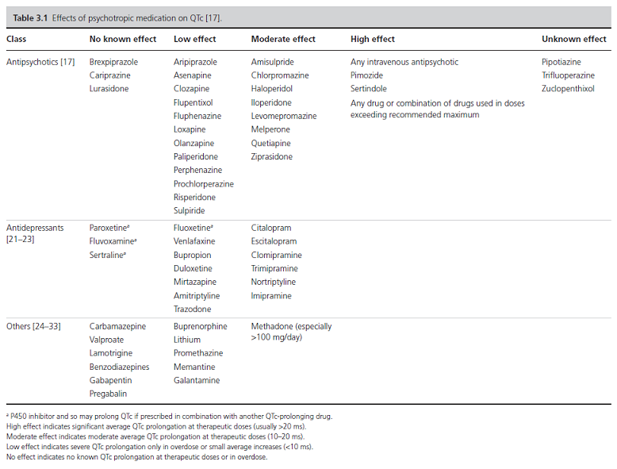
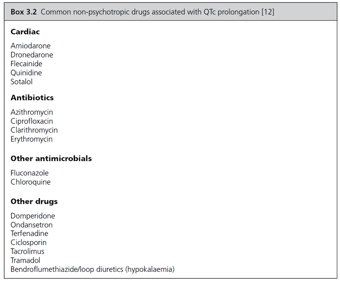
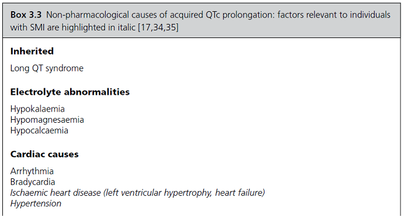
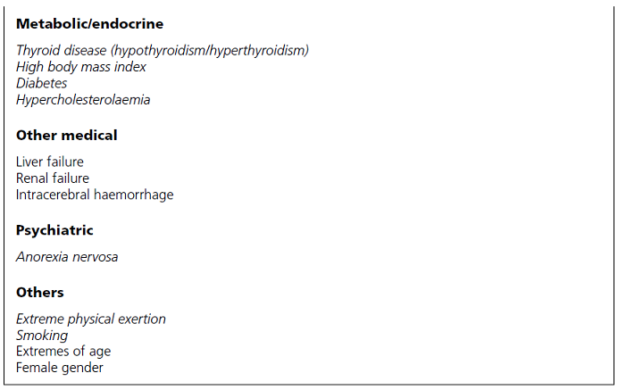

Approach to QTc Prolongation
Dr. Jagdish Varma
Professor of Psychiatry, Bhaikaka University, Karamsad
Contents
1
. Outline
1.1
. Prescribing, screening, and monitoring
1.2
. Assessment
1.3
. Management
2
. Understanding QTc
2.1
. Psychotropic medications and QTc
2.2
. Non-psychotropic medications and QTc
2.3
. Non-pharmacological causes of prolonged QTc
3
. Prescribing QTc prolonging medications
4
. Assessment
4.1
. History
4.1.1
. Cardiac symptoms
4.1.2
. Etiologic history
4.1.3
. F/H/O
4.2
. Examination
4.3
. Investigations
5
. Management
6
. Reference
1
.
Outline
1.1
.
Prescribing, screening, and monitoring
Avoid QTc prolonging medication if possible
Use lowest effective dose
Avoid polypharmacy
Assess cardiovascular risk and consider need for screening ECG
Consult cardiologist if in doubt
1.2
.
Assessment
Screen for symptoms of arrhythmia
Identify pharmacological and non‐pharmacological causes
Assess cardiovascular risk
Bloods plus ECG (with or without 24‐hour tape/echocardiogram)
1.3
.
Management
Consider stopping or reducing dose of offending drugs
Address non‐pharmacological risk factors
Monitor proactively
🚩 Refer to cardiologist if:
more than 500 ms or more then 60 ms increase
associated with history suggestive of arrhythmia
prior cardiac event
unable to stop or reduce medication
2
.
Understanding QTc
Males : > 440ms
Females : > 470ms
Increased QTc (
more than 500ms
)
-
>
RF for Torsades
-
>
Sudden cardiac death
Inherited (rare)
Acquired (8% of psychiatric patient)
MCC Acquired = Medications
esp. IV antipsychotics
+ CYP 450 inhibitors (Fluvox, FXN, PXN)
2.1
.
Psychotropic medications and QTc

2.2
.
Non-psychotropic medications and QTc

2.3
.
Non-pharmacological causes of prolonged QTc


3
.
Prescribing QTc prolonging medications
Avoid QTc prolonging medication if possible
Use lowest effective dose
Avoid polypharmacy
Assess cardiovascular risk and consider need for screening ECG
Consult cardiologist if in doubt
4
.
Assessment
QTc prolongation should be suspected in any individual presenting with symptoms suggestive of arrhythmia (e.g. palpitations or unexplained collapse)
The diagnosis may also be made on a screening ECG or as an incidental finding
A detailed assessment as follows need to be carried out once diagnosed
4.1
.
History
4.1.1
.
Cardiac symptoms
Palpitations
Syncope
Dizziness / Lightheadedness
Chest pain
SOB
4.1.2
.
Etiologic history
Non-pharmacologic conditions
Electrolyte disturbances: diarrhoea, vomiting, malnutrition, and eating disorder
Cardiovascular conditions: history of CVD, smoking, obesity, diabetes mellitus, hypertension, and hypercholesterolaemia.
Cardiac events: ventricular tachyarrhythmia, TdP, cardiac arrest
Other medical conditions: Liver failure, renal failure, Thyroid
Drugs and substance use
drug h/o including possible deliberate or accidental overdose.
Alcohol, smoking
4.1.3
.
F/H/O
Sudden cardiac death
4.2
.
Examination
CVS
Inspection: high or low BMI, peripheral oedema, raised jugular venous pressure (heart failure).
Palpation: pulse (regularity plus rate).
Auscultation: murmurs or added sounds (heart failure/left ventricular hypertrophy), pulmonary oedema.
Palpation for pedal/sacral oedema (heart failure, renal failure).
Lying and standing blood pressure if history of presyncope/syncope.
4.3
.
Investigations
Blood
CBC
RFT (renal failure, hypokalaemia, hypomagnesaemia, hypocalcaemia)
LFT (liver failure)
Lipid profile (hypercholesterolaemia)
TFT (hyperthyroidism/hypothyroidism)
Antipsychotic plasma levels (toxicity)
BNP (if history suggestive of heart failure).
ECG
+- ECHO and HOLTER
5
.
Management
6
.
Reference
Pillinger T, Gaughran F, Taylor D. The Maudsley Practice Guidelines for Physical Health Conditions in Psychiatry. 2020.